Brinell hardness test is most commonly used to test materials that have a structure that is too rough or too coarse to be tested using
other test methods, e.g., castings and forgings. In brinell testing machine the load is applied by a lever mounted on knife edges and
carrying a hanger for suspending the required load. The supporting table for spacing the specimen can be raised or lowered by a steel
screw by operating a large hand wheel. When testing, the load is applied and removed by hydraulic power controlled by a hand lever. The
indenter used is a hardened steel ball which will have a diameter of 10mm, 5mm or 2.5mm. The reading microscopic has a 25-fold magnification.
The gap between successive graduations of the scale is 0.5mm and a micrometer is arranged sideways, the eye piece of the reading microscope
may be turned up by 90 degree so that the impressions of the ball can be measured in two perpendicular directions.
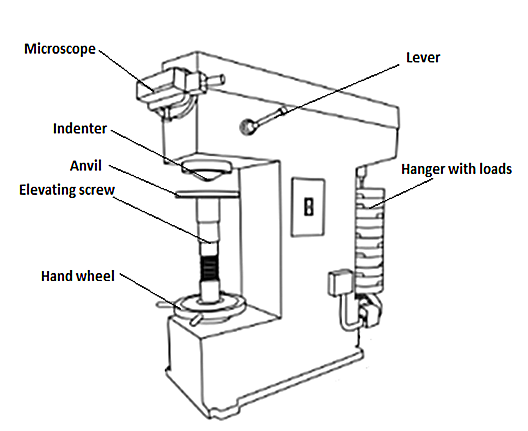
Brinell testing often use a test load of 500Kg for relatively soft materials such as copper, aluminium alloys and 3000kgf for harder material
and a 10mm wide indenter so that the resulting indentation averages out of most surface and sub-surface inconsistencies. After the load is
applied for a specific time (usually 10 to 15 sec for hard ferrous materials and about 30 sec for soft nonferrous materials) the recovered
indentation diameter is measured in millimetre. This time period is required to ensure that plastic flow of the work metal has ceased.
A well structured Brinell hardness number reveals the test conditions, i.e., "70 HB 10/500/30" which means that a Brinell Hardness of 70 was
obtained using a 10mm diameter hardened steel ball with a 500 kilogram load applied for a period of 30 seconds. Highly hardened steel
cannot be tested by a hardened steel ball because the ball will get flattened and become permanently deformed. The appreciable error in
BHN occurs at indentation diameter less than 2.9mm and for softer materials inaccuracy is at diameter greater than 6mm. On tests of extremely
hard metals a tungsten carbide ball is substituted for the steel ball (upto 444-627 HB) and a special hardened and burnished steel ball called
the “Hulked” ball may be used up to 500 HB.
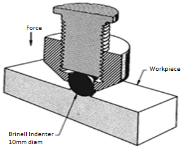
(showing the manner in which the application of force by the indenter causes the metal of work piece to flow)
Compared to the other hardness test methods, the indenter used in brinell makes the deepest and widest indentation, so that test averages the
hardness over a wider amount of materials which will accounts for multiple grain structures and any irregularities in the uniformity of the material.
The Brinell hardness number is defined as the ratio of test load to the surface area of indentation.
 Where,
P = Load in Kg
HBW = Brinell hardness number (Kg/mm2)
D = Diameter of the ball (mm)
d = Diameter of the indentation (mm)
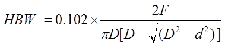
Where,
Constant = 0.102 = 1/(g ) = 1/9.81
g = acceleration due to gravity
F = Force in Newton
While testing, the indentation should not be made nearer to the edge of a specimen, the distance from the edge to the centre of indentation
should be greater than 2.5 times diameter of indentation in order to avoid unnecessary concentration of stresses the spacing between the two
adjacent impressions should be at least 3 times the diameter of indentation, and also the rapid rate of applying load should be avoided since
rapidly applied load may restrict plastic flow of a material which produces effect on size of indentation.
TEST SPECIMEN:
The selected specimen shall have a thickness at least 8 times the depth of indentation to avoid the deformation to be extended to the opposite
surface of a specimen. After the test, no deformation shall be there on the surface of the test piece opposite to the indentation. The surface
of the test specimen shall be smooth and even, free from oxide scale, foreign matter and, in particular completely free from lubricants.
POSSIBLE INDENTATION PATTERNS:
Brinell number is based on the surface area of the indentation. In the brinell test the indentation may exhibit different surface
characteristics, which have been carefully studied and analysed. When a indenter is pressed on to the surface of the specimen under
compressive load there will be a large number of deformations under the indenter. The deformed material flow out in all directions.
Surface surrounding the impression bulges out slightly to account for volume of material displaced under the indenter. In case of ridging
type impression the diameter of the indentation will be more than the actual value and whereas, in case of sinking type impression the
diameter of the indentation will be less than the actual value.
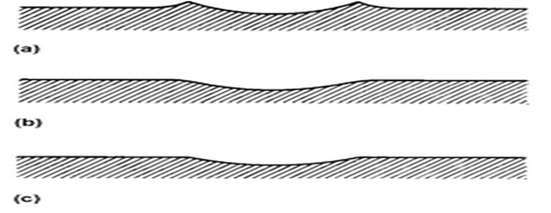
RELEVANT INDIAN STANDARD FOR BRINELL TEST:
Where,
P = Load in Kg
HBW = Brinell hardness number (Kg/mm2)
D = Diameter of the ball (mm)
d = Diameter of the indentation (mm)
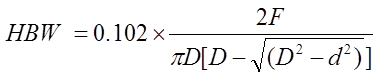
Where,
Constant = 0.102 = 1/(g ) = 1/9.81
g = acceleration due to gravity
F = Force in Newton
While testing, the indentation should not be made nearer to the edge of a specimen, the distance from the edge to the centre of indentation
should be greater than 2.5 times diameter of indentation in order to avoid unnecessary concentration of stresses the spacing between the two
adjacent impressions should be at least 3 times the diameter of indentation, and also the rapid rate of applying load should be avoided since
rapidly applied load may restrict plastic flow of a material which produces effect on size of indentation.
TEST SPECIMEN:
The selected specimen shall have a thickness at least 8 times the depth of indentation to avoid the deformation to be extended to the opposite
surface of a specimen. After the test, no deformation shall be there on the surface of the test piece opposite to the indentation. The surface
of the test specimen shall be smooth and even, free from oxide scale, foreign matter and, in particular completely free from lubricants.
POSSIBLE INDENTATION PATTERNS:
Brinell number is based on the surface area of the indentation. In the brinell test the indentation may exhibit different surface
characteristics, which have been carefully studied and analysed. When a indenter is pressed on to the surface of the specimen under
compressive load there will be a large number of deformations under the indenter. The deformed material flow out in all directions.
Surface surrounding the impression bulges out slightly to account for volume of material displaced under the indenter. In case of ridging
type impression the diameter of the indentation will be more than the actual value and whereas, in case of sinking type impression the
diameter of the indentation will be less than the actual value.
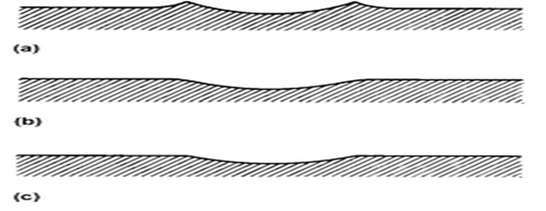
RELEVANT INDIAN STANDARD FOR BRINELL TEST:
- IS 1500: 2005, Method for Brinell Hardness Test for Metallic Materials, Fourth Revision, 2005.

OBJECTIVE: To determine the indentation hardness of,
- Mild steel specimen
- Cast iron specimen
- Brass specimen
- Aluminum specimen
- When you click on a brinell test file, a new window will open as shown below. 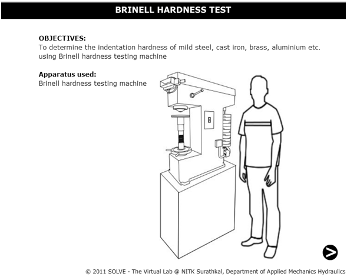
- Click on the NEXT button to move to the next step. 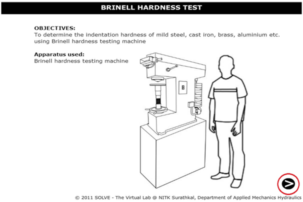
- Click on the material to select the required specimens and only after selecting the specimen then click on NEXT button. 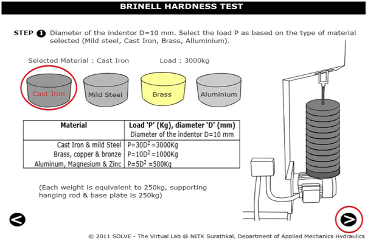
- Rotate the HAND WHEEL in clockwise direction till the specimen is in position, after adjusting the specimen in specified position then move to the next step by clicking on NEXT button. 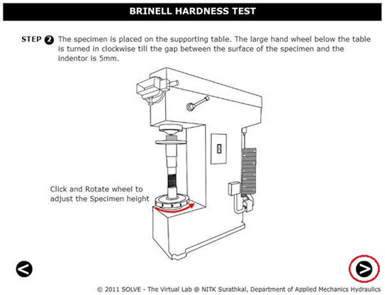
- Now click on the POWER BUTTON to switch on the motor. 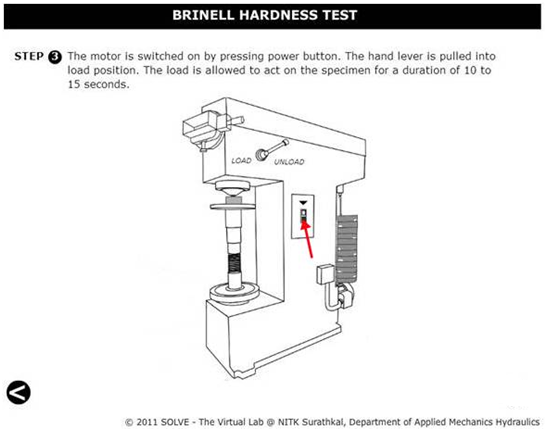
- After that click on HAND LEVER to apply load to a specimen. 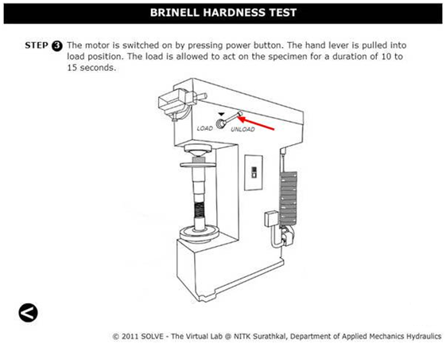
- Allow the load to act on the specimen for 10 to 15 sec. 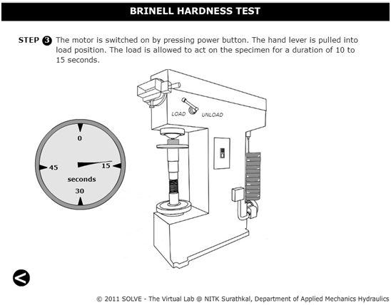
- Now click on the HAND LEVER to unload the specimen, and then click on NEXT button to see the diameter of the impression. 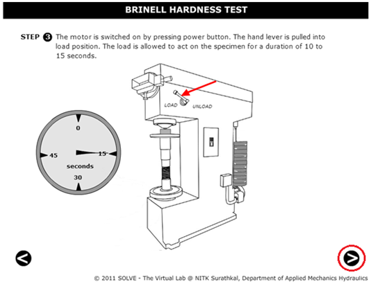
- Scroll the ADJUST SCREW to measure the diameter of the impression. 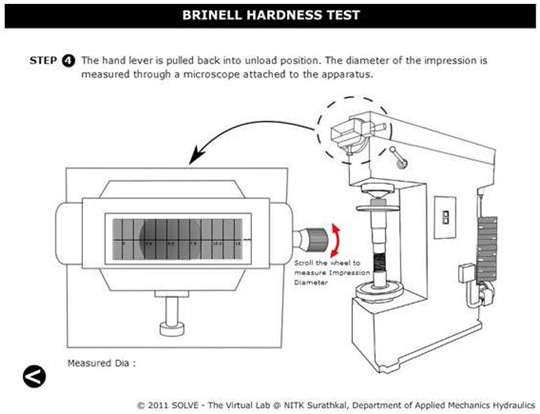
- Then after clicking the next button final results will be obtained as shown in tabular column. 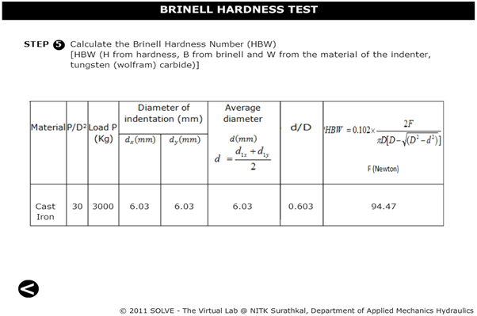


- Why minor load is applied to the specimen?
- On which basis major load is selected?
- How much is the loading time for ferrous and non ferrous material?
- Which are the possible indentation patterns in brinell hardness test?
- What precautions are taken in brinell hardness test?

IS 1500 (2005): Method for Brinell Hardness Test for Metallic Materials, Third Revision, 2005.
Hearn E,J., Mechanics of Material, Pergaman Press, England, 1972.
Beer and Johnston E.R., Mechanics of Material, 3rd Edition, Tata McGraw Hill, New-Delhi, 2007.
Konrad Herrmann, Hardness Testing: Principles and Applications, ASM, 2011.
Howard E. Boyer, Hardness Testing, ASM, 1995.
S.S. Bhavikatti and K.G. Rajashekarappa, Engineering Mechanics, Wiley Eastern Ltd.
S.S. Bhavikatti and A.V. Hegde, Engineering Mechanics - Problems and Solutions.
G.E. Dieter, Mechanical Metallurgy, SI Metric Edition, McGraw – Hill.